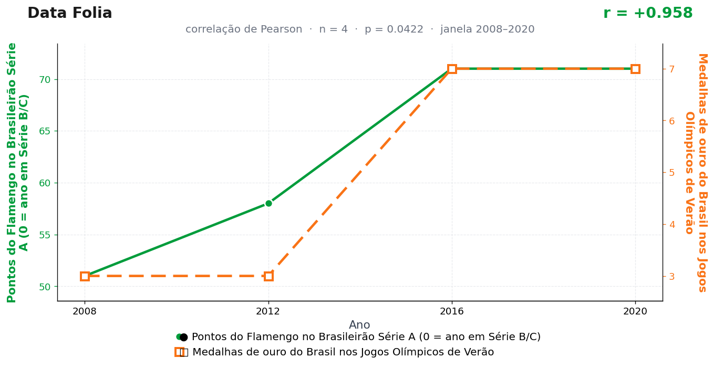

Post de 26/10/2026
A teoria
O Flamengo opera em escala de massa. Suas vitórias não ficam confinadas ao estádio; elas espalham pelo país uma linguagem de liderança, barulho e confiança pública.
Essa linguagem alcança o esporte olímpico. Atletas entram em competição dentro de um ambiente nacional já treinado para esperar protagonismo e tolerar pressão de primeiro lugar.
A campanha rubro-negra prepara o clima; o pódio recebe a temperatura. O futebol fornece o ensaio emocional, e o ouro aparece como consequência de um país em modo final.
O COI ainda não reconhece o Maracanã lotado como instalação olímpica permanente de preparação emocional — num claro erro de leitura de dados que este comitê rubro-negro de um homem só não se cansará de denunciar.
A teoria é ficção; a correlação é real: r = 0,96 (n = 4, p = 0,042).
Os dados por trás

- Pontos do Flamengo no Brasileirão Série A (0 = ano em Série B/C) — 4 pontos anuais, período 2008–2020. Fonte: CBF / Wikipedia — Campeonato Brasileiro Série A.
- Medalhas de ouro do Brasil nos Jogos Olímpicos de Verão — 4 pontos anuais, período 2008–2020. Fonte: Comitê Olímpico do Brasil (COB).
Como as correlações deste site são encontradas — e por que você não deve confiar nelas — está explicado na nossa metodologia.
Por que isso acontece?
Este post junta os dois pecados capitais da correlação recreativa. Primeiro, n = 4: só entram anos olímpicos (2008–2020), e quatro pontos mal dão para desenhar uma reta, quanto mais para defendê-la. Segundo, as duas séries são degraus quase idênticos: o Flamengo salta de 51–58 pontos para 71–71, e os ouros do Brasil saltam de 3–3 para 7–7. Dois degraus na mesma posição produzem r alto automaticamente — é geometria, não sinergia esportiva.
Repare no p = 0,042: passou raspando no limiar mágico de 0,05. Quando se testam centenas de pares, os que aparecem com p entre 0,01 e 0,05 são justamente onde moram os falsos positivos esperados — se 5% dos pares aleatórios passam por acaso, alguém tem que ser esse 5%, e ele está nesta página, de pompons.
Com amostras desse tamanho, remover um único ponto (2016, por exemplo, com a Olimpíada em casa inflando a delegação) muda tudo. Conclusão que não sobrevive a um ponto a menos não é conclusão: é pose para foto.
Post de 26/10/2026 · publicado também no Instagram @datafolia.